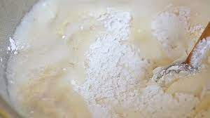
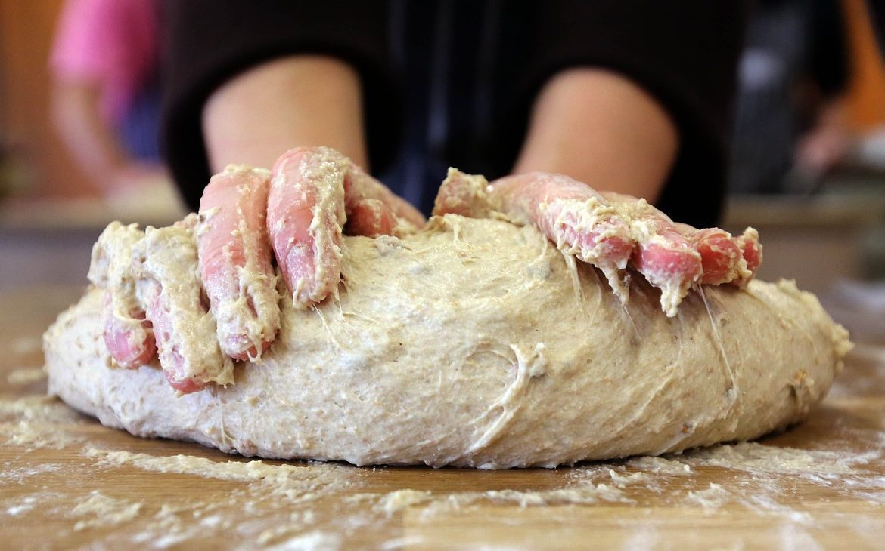
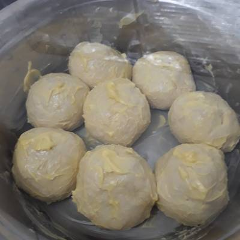

RESEP KUE MARYAM
Bahan-bahan :
- 250gr tepung terigu
- 1 butir telur
- 3 sdm margarin, lelehkan
- 100 ml air hangat
- 2 sdm susu bubuk (optional)
- 1/2 sdt garam
- margarin leleh untuk olesan
- minyak untuk merendam
Langkah-langkah :
- Campur semua bahan roti menjadi satu

- Uleni sampai kalis

- Kalisnya adonan canai tidak sekalis adonan roti ya, kira-kira seperti ini
